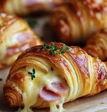
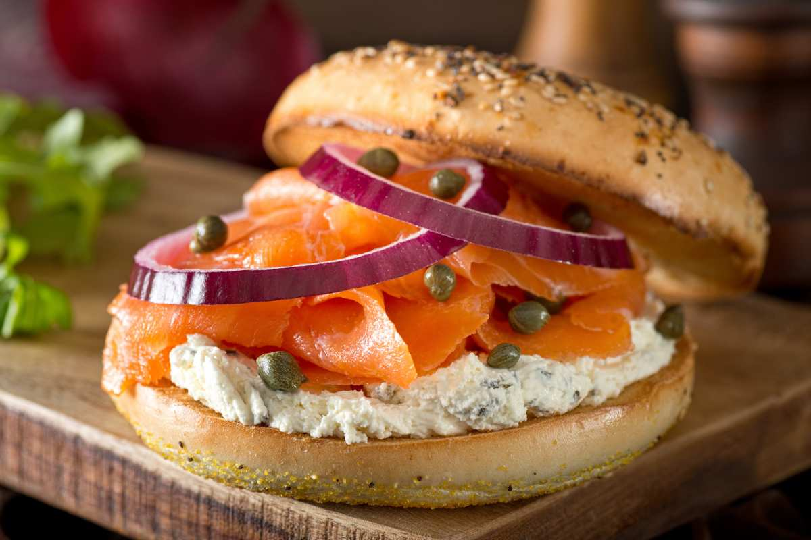
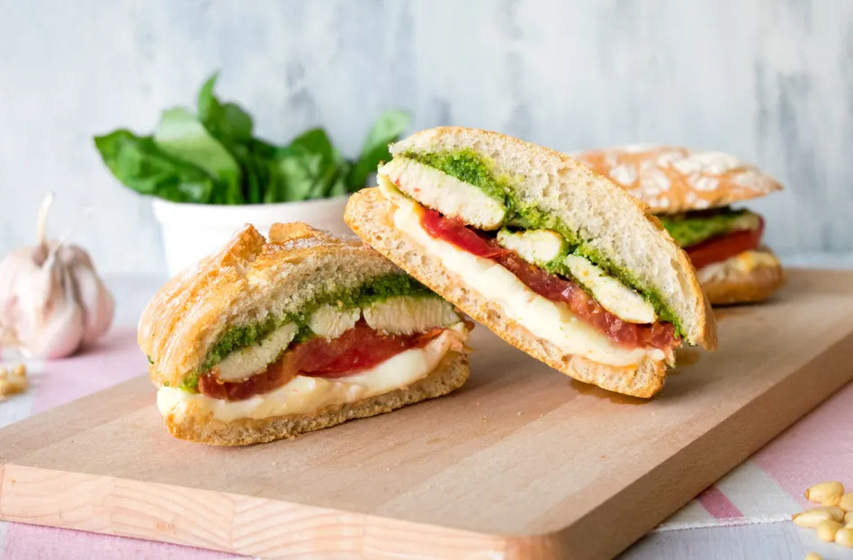
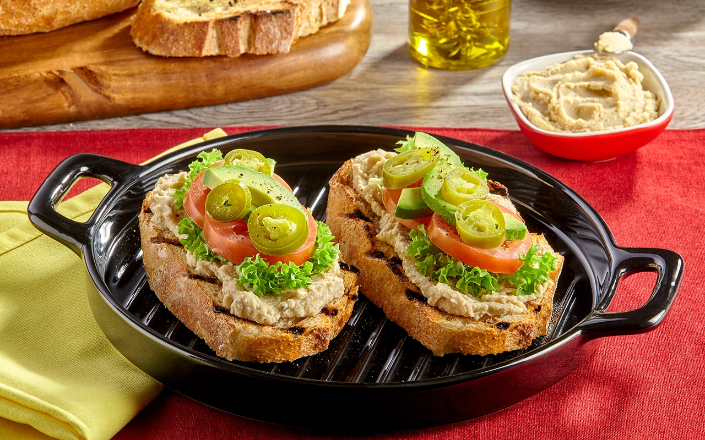

Un croissant recién horneado, relleno con jamón serrano y queso suizo derretido, creando una combinación de texturas crujientes y suaves.
Precio: Q35.00
Un bagel recién horneado cubierto con queso crema, salmón ahumado, alcaparras y cebollas moradas en rodajas finas.
Precio: Q48.00
Pechuga de pollo a la parrilla, acompañada de una salsa pesto casera, tomate fresco y queso mozzarella, todo dentro de un pan artesanal ligeramente tostado.
Precio: Q40.00
Tostada de pan integral cubierta con hummus casero, zanahorias ralladas, pepino fresco y espinacas, todo rociado con aceite de oliva y semillas de sésamo.
Precio: Q65.00
